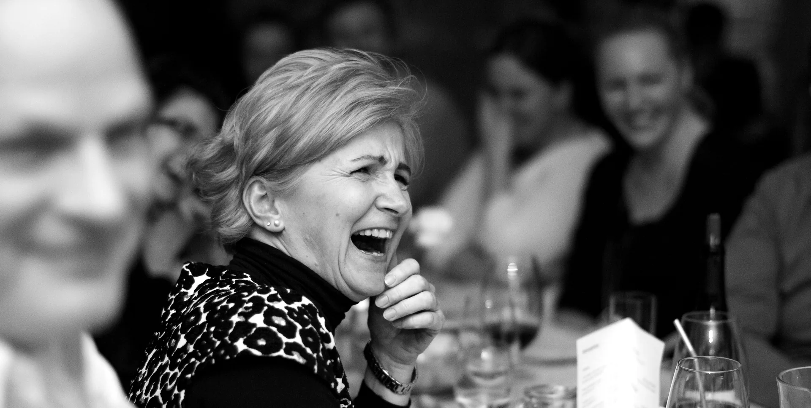

03 · SEP
Genussroute 6850
Dinner & Genuss

Ein Abend in der Wirtschaft beginnt am Tisch und endet manchmal erst nach der letzten Zugabe.
Tickets & DinnerNur TischDas nächste Programm
Dinner & Genuss

Dinner & Bühne

Genuss trifft Humor

Auch ohne Veranstaltung bleibt die Wirtschaft ein Ort für Mittag, Dinner und gemeinsame Zeit. Die Bühne ergänzt das Haus – sie ersetzt es nicht.
Tisch reservieren
Hochzeiten, Geburtstage und Catering in der Wirtschaft, im Kulturhaus oder bei euch vor Ort.
Fest unverbindlich anfragen